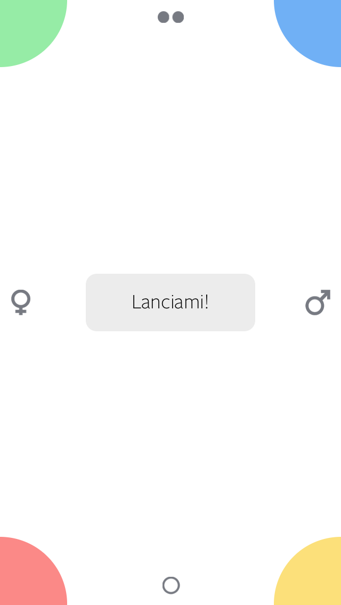
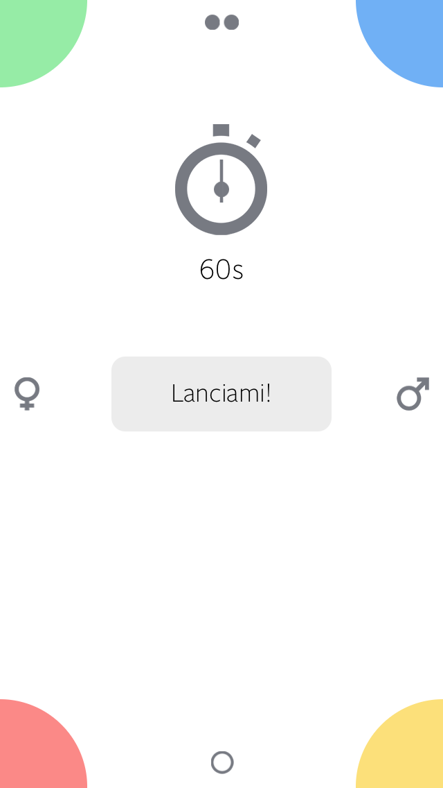
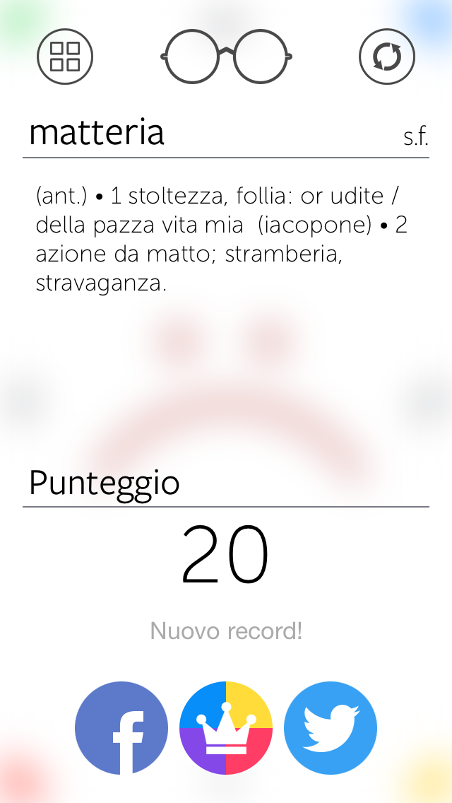
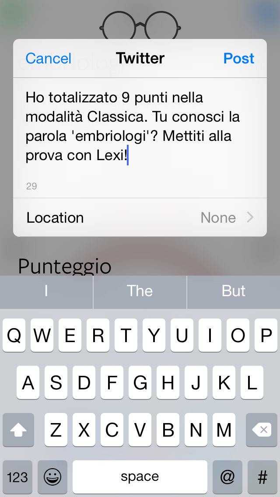

Più di un gioco
Impara a distinguere i sostantivi con Lexi. Ottima per i bambini e per chi è alle prime armi. E voi? Siete davvero sicuri di conoscere così bene la vostra lingua?
Landing originale, ricreata nel 2026·Versione moderna
Gioca con il tuo dizionario
Non più disponibile su App Store
L'unico modo per fare un gran bel lavoro, è amare quello che si fa.
Per questo noi amiamo Lexi.
Impara a distinguere i sostantivi con Lexi. Ottima per i bambini e per chi è alle prime armi. E voi? Siete davvero sicuri di conoscere così bene la vostra lingua?
Ogni elemento in Lexi è stato attentamente studiato e disegnato per rendere l'esperienza di gioco unica: dal dizionario rifinito a mano all'icona degli occhiali in ricordo di Steve Jobs.
Le tre modalità di Lexi (Classico, Tempo e Arcade) garantiscono un'esperienza di gioco completa.





